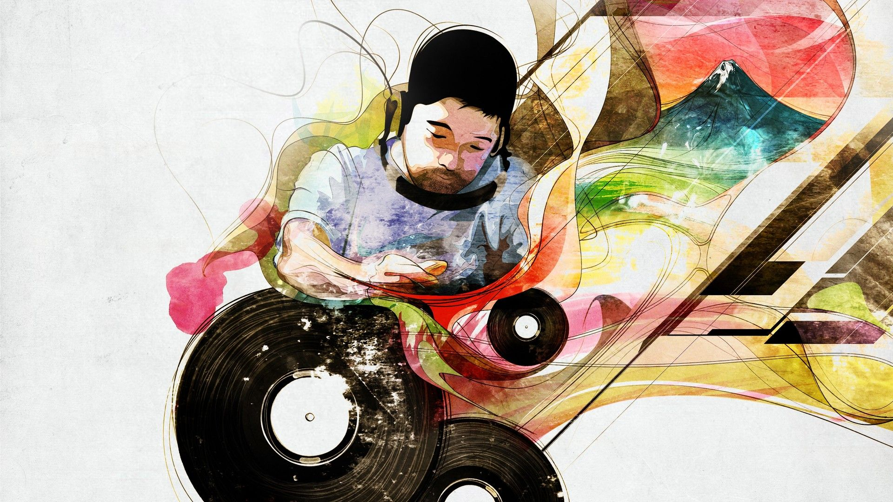
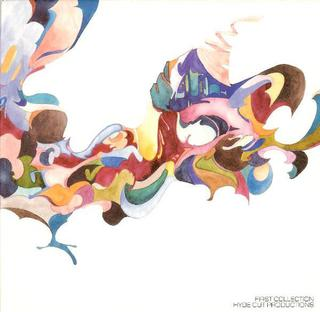
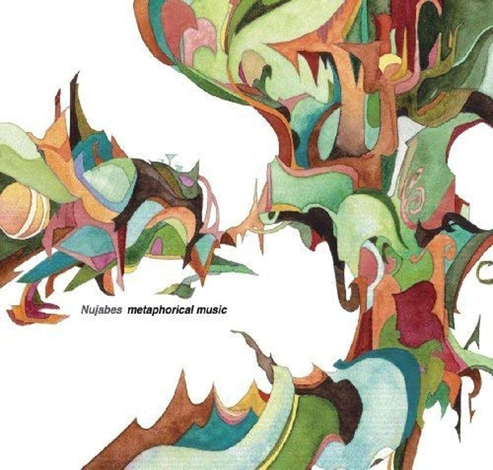
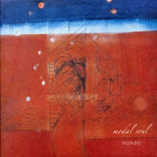
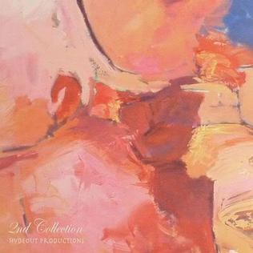
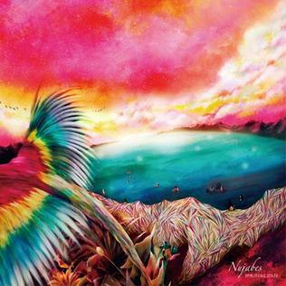

<!DOCTYPE html>
<html lang="eng">
    <head>
        <meta charset="UTF-8">
        <title>Landing Page</title>
        <link rel="stylesheet" href="styles.css">
    </head>
</html>
<body>
<div class="top-whole">
    <div class="header">
        <div class="logo">
            
        </div>
        <div class="links">
            <ul>
                <li><a href="#">About</a></li>
                <li><a href="#">Albums</a></li>
                <li><a href="#">Contact</a></li>
            </ul>
        </div>
    </div>
    <div class="top">
        <div class="left-side">
            <div class="hero">
                Nujabes 
            </div>
            <div class="subtext">
                Japanese record producer Seba Jun helped to proliferate the Lo-fi genre with his beautifully arranged fusion of jazz and hip-hop. He was unfortunately killed in a car accident in 2010 at the age of 36. His work continues to live on within the community.
            </div>
            <button class="sign up">
                Sign up
            </button>
        </div>
        <div class="right-side">
            <div class="placeholder">
                
            </div>
        </div>
    </div>
</div>
    <div class="middle-top">
        <div class="albums-title">
            Albums
        </div>
        <div class="albums">
            <div class="album-1"></div>
                
            <div class="album-2"></div>
                
            <div class="album-3"></div>
                
            <div class="album-4"></div>
                
            <div class="album-5"></div>
                
            <div class="album-6"></div>
                
        </div>
            <div class="box-subtext">
                <div class="box-subtext-1">
                    Hydeout Productions (2003)
                </div>
                <div class="box-subtext-2">
                    Metaphorical Music (2003)
                </div>
                <div class="box-subtext-3">
                    Modal Soul (2005)
                </div>
                <div class="box-subtext-4">
                    Hydeout Productions #2 (2007)
                <div class="box-subtext-5">
                    Spiritual State (2011)
                </div>
                <div class="box-subtext-6">
                    Luv-Sic Hexaology (2015)
                </div>
             </div>
        </div>
        </div>
    </div>
    <div class="middle-bottom">
        <div class="quote">
            I'm just ordinary guy
        </div>
        <div class="thor">
            -Seba Jun, Seoul Live Concert 2006
        </div>
    </div>
    <div class="bottom">
        <div class="call-to-action">
            <div class="left-side-2">
                <div class="bot-main-text">
                    Call to action! It's Time!
                </div>
                <div class="bot-subtext">
                    Sign up for our product by clicking that button right over there!
                </div>
            </div>
            <div class="right-side-2">
                <button class="sign-up-2">
                    Sign up
                </button>
            </div>
        </div>
    </div>
    <div class="footer">
        Copyright © 2022 Made by KingdomTim <a href="https://github.com/KingdomTim/Landing-Page" target= "_blank" href="noopener noreferrer"></a>
    </div>
    </div>
    </div>
    </div>
        </div>
    </div>
</body>